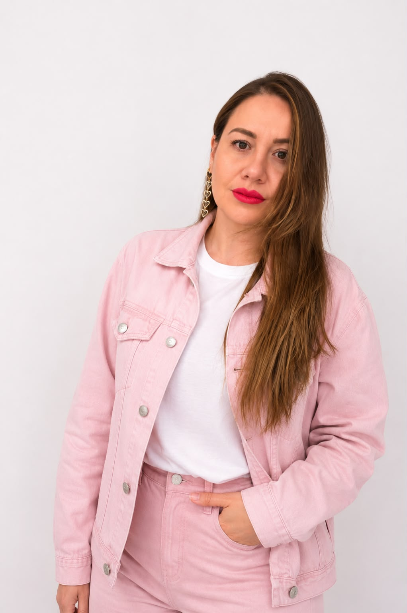

Estrategia 1:1 para convertir ideas, conocimiento y servicios en una propuesta clara, una oferta vendible y un sistema de negocio que pueda funcionar.
Contáctame por WhatsApp
Soy Nicole Carrillo. He trabajado entre estrategia, operación, procesos y construcción de negocios, y eso me enseñó algo: una buena idea vale poco si no tiene estructura detrás.
Mi formación en Relaciones Internacionales, Administración de Empresas y Dirección Estratégica, sumada a mi experiencia en sistemas de gestión y análisis de procesos, me permite mirar un negocio completo, detectar qué está desordenado y convertirlo en decisiones, procesos y una ruta clara de crecimiento.
Empezar un negocio no significa únicamente abrir una cuenta en redes sociales, crear un logo o comenzar a vender.
Antes de invertir tiempo y dinero necesitas tener claridad sobre qué estás construyendo, para quién, qué vas a vender y cómo ese negocio puede funcionar de manera organizada.
Esta asesoría está diseñada para personas que están iniciando un negocio, desarrollando una marca profesional o que ya comenzaron, pero necesitan ordenar y estructurar su idea antes de seguir avanzando.
No se trata de hacer más cosas. Se trata de definir cuáles son las correctas, en qué orden deben construirse y cómo se conectan dentro del negocio.
Definimos qué estás construyendo, qué problema buscas resolver y hacia dónde debe dirigirse el negocio.
Identificamos a quién quieres llegar, qué necesita y por qué debería elegir tu propuesta.
Trabajamos qué haces, qué te diferencia y cómo comunicarlo de forma clara.
Revisamos qué productos o servicios puedes ofrecer y cómo estructurarlos.
Construimos una primera lógica de precios, paquetes y modalidades de venta.
Definimos qué necesitas realmente: redes, WhatsApp, landing, agenda, formularios u otros canales.
Ordenamos prioridades: qué debes hacer primero, qué puede esperar y dónde concentrar tus recursos.
No necesitas llegar con todo resuelto. Precisamente la sesión sirve para ordenar el punto en el que estás y decidir qué construir.
Revisamos tu negocio o idea, tomamos decisiones y construimos una hoja de ruta concreta.
Si tienes una idea, un servicio o un negocio que necesita estructura, conversemos sobre el punto en el que estás y qué necesitas construir.
Escribirme por WhatsApp